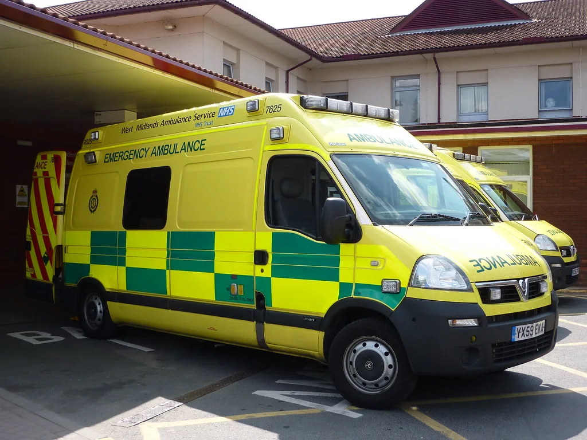

폭염 온열질환 사망 23명…정부, 부처합동 비상대응기구 가동
연일 이어지는 폭염으로 올여름 온열질환 사망자가 23명으로 집계됐다. 중앙재난안전대책본부(중대본)는 8일 '폭염·가뭄 대처상황 점검회의'를 열고, 대통령 지시에 따라 폭염 대응체계를 한층 강화하기로 했다고 밝혔다. 사망자 가운데 65세 이상 고령층이 19명으로 전체의 82.6%를 차지해, 이번 폭염이 특히 고령층에게 치명적으로 작용하고 있는 것으로 나타났다.
사망 발생 장소를 보면 논밭 등 농촌지역이 7명으로 30%를 차지해 가장 많았고, 실내외 작업장에서 숨진 경우도 6명으로 26.1%에 달했다. 폭염 속에서도 농사일이나 실외 노동을 이어가야 하는 고령 농업인과 야외 근로자들이 온열질환에 가장 취약한 집단으로 확인된 셈이다. 앞서 발표된 통계에서도 온열질환 사망자의 상당수가 80세 이상 초고령층에 집중돼 있는 것으로 나타난 바 있어, 정부는 이 같은 취약계층에 대한 보호 대책을 최우선 과제로 삼겠다는 방침을 재확인했다.

정부는 중대본을 주축으로 농림축산식품부, 보건복지부, 고용노동부 등 관계 부처에 사고수습지원본부 등 비상대응기구를 설치해 대응을 강화하기로 했다. 고령층과 야외 근로자 등 폭염 취약계층 보호를 최우선 과제로 삼고, 관계부처별 비상대응기구를 가동해 현장 대응 역량을 끌어올린다는 계획이다. 특히 농림축산식품부는 고령 농업인 보호와 농업·축산 분야 피해 예방에 중점을 두고, 고령 농업인 가정을 직접 방문해 냉방 물품을 지원하는 한편 농촌 왕진 버스를 운영해 찾아가는 의료 서비스를 확대하기로 했다.
올여름 폭염은 예년보다 이른 시기부터 이어지며 전국 대부분 지역에 폭염 특보와 열대야 특보가 장기간 발효된 상태다. 지난주에는 낮 최고기온이 40도 안팎까지 치솟는 지역이 속출했고, 최근 며칠 사이 기세가 다소 꺾이긴 했지만 여전히 전국 대부분 지역의 낮 기온이 30도를 웃돌고 밤에도 열대야가 이어지고 있다. 이 때문에 온열질환자 수도 하루 100명 이상 발생하는 날이 반복되면서, 의료 현장과 지자체 대응 인력의 피로도 역시 누적되고 있는 상황이다.

보건복지부는 폭염 취약계층에 대한 응급 의료 대응 체계를 점검하는 한편, 무더위쉼터 운영 시간 연장과 취약계층 안전 확인 활동을 지자체와 함께 강화하기로 했다. 고용노동부 역시 실외 작업장을 대상으로 한 폭염 안전 수칙 점검을 확대하고, 온열질환 발생 위험이 큰 시간대에는 작업을 중단하도록 하는 지침 준수 여부를 집중 단속할 방침이다. 지자체별로도 독거노인 안전 확인 전화와 방문 서비스를 확대하는 등 자체적인 보호 조치에 나서고 있다.
전문가들은 온열질환 사망의 상당수가 예방 가능한 사고인 만큼, 취약계층에 대한 선제적 개입이 무엇보다 중요하다고 강조한다. 특히 고령 1인 가구나 논밭에서 홀로 작업하는 농업인의 경우 이상 징후를 스스로 인지하기 어려운 경우가 많아, 주변의 관심과 지자체의 정기적인 안전 확인이 사망을 막는 핵심 변수가 된다는 지적이다. 정부는 폭염이 완전히 물러갈 때까지 비상대응기구를 유지하며 상황을 지속적으로 점검해 나갈 계획이라고 밝혔다.